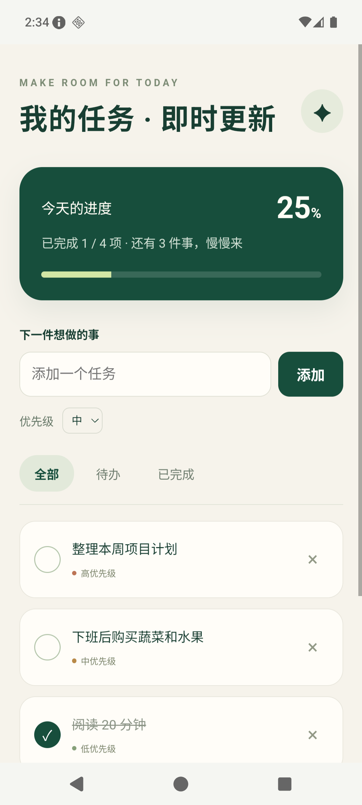
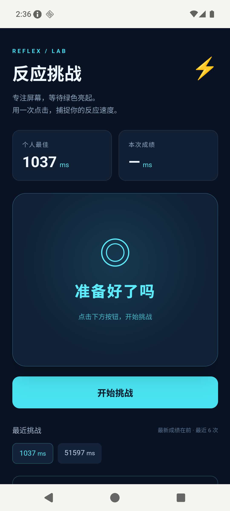

TAKU OS / Development-route review / 2026-10-15
How does the Agent know how to build an app?
This verification used an explicit development request, a prepared toolchain, and build scripts. The model knows general programming; prompts and documentation supply Taku paths, host interfaces, packaging, and acceptance rules. Automatic route selection, dedicated development-skill loading, and a unified development lifecycle were not yet integrated into the assistant.
An experimental harness exists; a unified development entry is missing.
app-kit already has a generation contract, a generic seed, build/preview/package scripts, and business APIs. Existing phone skills are generic built-ins, without a Taku app-development skill. Historical generate.sh directly launches codex exec; production integration should call tools through the existing App Server conversation instead of starting another Agent execution chain.
Four runtime routes actually tried
| Route | Agent writes | Runtime / artifact | Historical results checked | Boundaries |
|---|
WebView light app
Later expanded into React app-kit | Early HTML/CSS/JS; later complete App.jsx and api.mjs | Direct preview and hot reload in a shared host; optional standalone WebView APK export | Water tracker, task board, reaction game, unit converter, and two-team scoreboard. Records cover React interactions, hot reload, API calls/invalid-parameter rejection, and standalone APKs | Business APIs depend on a device background service; ordinary JS does not automatically gain system permissions. Early WebView persistence failures are recorded, so the entire route cannot be declared fully passed |
| Doric | JavaScript using Doric Panel, layout, native controls, and storage APIs | Preinstalled Doric host renders Android native controls | Water tracker: real taps reached 250ml, still showing 250ml after reopening. Screenshots and historical test records were checked | Host prepared on a computer; not a distributable system component, and general standalone APK export was not verified |
| HapJS quick app | UX source and manifest using framework storage/toast APIs | Build RPK on the phone and import into the official preview platform | Water-tracker RPK: 12773 bytes, imported and actually tapped to 250ml. Passed after fixing incorrect tags in the first attempt | Requires HapJS platform and dependencies; not a standalone Android APK, and production adaptation was not accepted |
| Native Java APK | MainActivity.java and Manifest; the newer round also generated ScoreStore/Provider | On-device ECJ → D8 → aapt → signing → installation | Historical water-tracker APK; fresh October 15 tests passed creation, replacement upgrade, persistence, API calls, and permission rejection for the score/system-API app | Compiler toolchain prepared separately, not preinstalled in ROM; only small framework-API apps verified, not arbitrary Gradle/AndroidX projects |
Two explorations that are easy to confuse
Fixed JSON configuration:Early coffee/exercise widgets generated only configuration for a limited component set. This was an experiment, later excluded from the goal of freely authoring app source.
Standalone APK export for light apps:The reaction game and two-team scoreboard have independent package names and installation entries, but a precompiled WebView shell still hosts generated UI code; this differs from generating and compiling fresh Java/Dex each time.
Historical timing definitions: one full model request for two React apps took about 130.8 seconds, including source generation, compilation, and launch commands. 29/62ms refers to JSX builds; 597ms to one APK-packaging step, not complete app generation. HapJS 1685ms and the older native 822ms likewise refer only to builds.
Light apps running at the time
Task board: freely authored JSX, state, and interactions
Actual historical emulator screenshot; later extended with a shared business API so UI and Agent call the same logic.Reaction game: real timing and standalone APK export
Actual historical emulator screenshot; scores came from timing and taps, with separate build/install records for APK export.
Three layers needed for formal packaging
Skill: development guidanceRoute selection, framework conventions, system-capability interfaces, permissions, source rules, and diagnosing/repairing errors.
Harness: execution toolsProject creation, builds, preview, hot reload, signing, installation, rollback, and acceptance; return consistent paths, status, and failure reasons.
Image: runtime environmentPreinstall hosts and controlled capability bridges, pin dependencies, manage app/service lifecycles, and establish third-party isolation.
User asks “make a tool” → Agent chooses a route and loads guidance → writes real source → builds / previews → interaction and API acceptance → optional APK export
Experimental pieces exist for each route; the complete automatic entry has not passed acceptance. React app-kit was the earlier general light-app candidate; recent tests added the complete native-APK development cycle.
Sources: old light-app-lab README, original generation prompts, UI/build/API logs, and historical screenshots; main-project tooling/app-kit and docs/scenario-acceptance.md, plus fresh 2026-10-15 acceptance. This is a review of historical material, not a rerun of old experiments or production acceptance on the current phone.